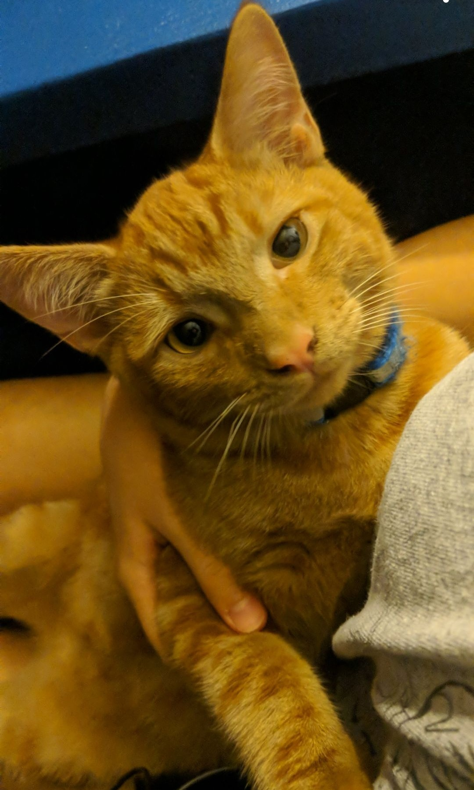
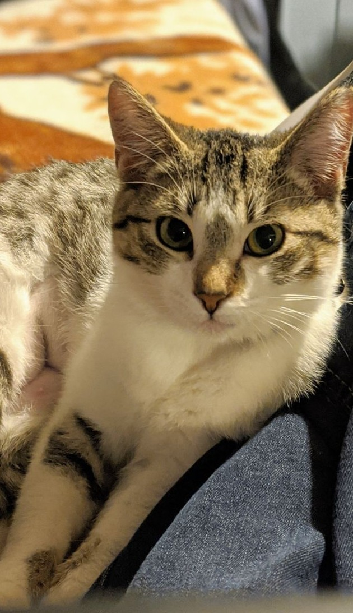

Hello! I am a computer engineering major at CSULB and am currently finishing up my freshman year. Besides computer engineering, some of my interests include digital drawing and editing using Adobe Photoshop and Illustrator. I also enjoy spending my time reading comics, playing video games, and sewing. I have three older siblings who have greatly inspired me in my choice of major since they have also entered STEM fields and graduated from CSULB. My family also consists of numerous parakeets and two cats named Mitsubishu Lancer and Nico, or Mitsu and Nico for short. On the left you can see a picture of Nico, and on the right is Mitsu.
